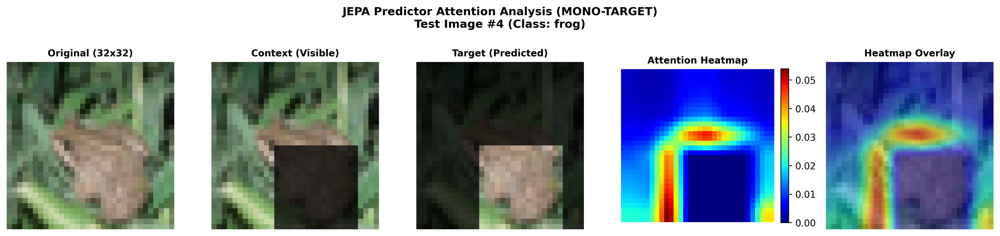
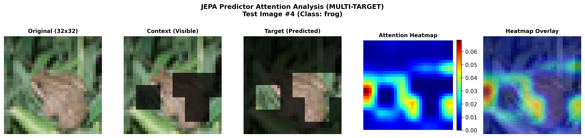

Série I-JEPA — Article 5 : Ouvrir la boîte noire (XAI) Dans cette première partie de notre cinquième article, nous allons concevoir une méthode pour ouvrir la boîte noire. En interceptant les matrices d'attention du Predictor, nous allons cartographier la façon dont notre JEPA utilise le contexte visible pour imaginer et prédire les zones masquées de l'image.
🧠 Le Predictor comme simulateur de l'espace latent
Rappelons le rôle du Predictor : il reçoit les représentations des patches de contexte visibles $s_x$ et des requêtes de masques vides $s_y$ contenant uniquement leurs coordonnées de position.
Pendant son calcul, chaque couche de Self-Attention (Attention sur soi) permet aux jetons de masque de "regarder" les patches de contexte pour reconstituer l'information manquante.
Si nous parvenons à savoir quels patches de contexte un jeton de masque regarde en priorité pour faire sa prédiction, nous pourrons comprendre la logique interne du modèle. C'est l'essence de l'Explicabilité (XAI).
🗺️ La cartographie de l'Attention (Target-to-Context)
Dans un Transformer, l'attention est calculée par une multiplication matricielle entre les requêtes (Queries $Q$) et les clés (Keys $K$).
Pour un Predictor recevant la séquence concaténée
[Contexte (K_x tokens), Cibles (K_y tokens)], la matrice d'attention totale a
une dimension de (N, N) où $N = K_x + K_y$.
Pour comprendre l'imagination du modèle, nous isolons spécifiquement la région Target-to-Context (Cibles vers Contexte) :
CLÉS (Keys)
┌───────────────────┬───────────────────┐
│ Context Tokens │ Target Tokens │
│ (0..K_x) │ (K_x..K_x+K_y) │
Q ┌─────────────┼───────────────────┼───────────────────┤
U │ Context │ │ │
E │ Tokens │ │ │
R ├─────────────┼───────────────────┼───────────────────┤
I │ Target │ TARGET-TO-CONTEXT│ │
E │ Tokens │ (Ce que les │ │
S │ (K_x..N) │ cibles regardent) │ │
└─────────────┴───────────────────┴───────────────────┘
└───────┬───────┘
│
C'est cette zone !
De forme (K_y, K_x) dans la matrice
🛠️ Dans les entrailles du
code : jepa_lab/visualize_attention.py
Voyons comment notre script extrait cette information en PyTorch.
Étape 1 : Intercepter la matrice d'attention
Pendant la passe de calcul (forward), notre module d'attention stocke la matrice
brute dans une variable temporaire attn_map (de forme
(B, Heads, N, N)) :
# Extraction de la carte pour chaque bloc du Predictor
attn_map = block.attn.attn_map
Étape 2 : Isoler la relation Target-to-Context
Nous découpons la matrice à partir de l'index $K_x$. Nous calculons ensuite la moyenne sur les têtes d'attention et sur tous les jetons cibles pour obtenir un score global d'importance pour chaque patch de contexte :
# On cible la sous-matrice : Lignes = après K_x, Colonnes = avant K_x
target_to_context = attn_map[0, :, K_x:, :K_x] # Forme : (Heads, K_y, K_x)
# Moyenne sur les têtes et sur les jetons cibles
avg_attn = target_to_context.mean(dim=(0, 1)) # Forme : (K_x,) (ex: 48 valeurs)
Étape 3 : Reconstruction de la Heatmap 32x32
Nous replaçons ces 48 valeurs d'attention sur notre grille de contexte de dimension $8\times 8$ (les 16 autres patches étant masqués et mis à 0). Ensuite, nous extrapolons cette grille $8\times 8$ vers la taille d'origine de l'image ($32\times 32$) par une interpolation bilinéaire pour obtenir un rendu lisse et esthétique :
# 1. Cartographie 8x8
heatmap_grid = np.zeros((8, 8))
for j, patch_idx in enumerate(context_indices[0]):
r = patch_idx // 8
c = patch_idx % 8
heatmap_grid[r, c] = final_attn[j]
# 2. Interpolation vers 32x32
heatmap_tensor = torch.tensor(heatmap_grid).unsqueeze(0).unsqueeze(0)
heatmap_resized = torch.nn.functional.interpolate(
heatmap_tensor, size=(32, 32), mode='bilinear'
).squeeze().numpy()
Enfin, nous superposons cette carte interpolée en couleur sur l'image d'origine avec une
transparence alpha=0.5.
🎨 Qu'observons-nous ? (L'effet WOW de l'interprétation)
Lorsque l'on génère ces images (attention_heatmap_mono.png et
attention_heatmap_multi.png), le résultat est fascinant :

Figure 1 : Carte d'attention du Predictor Mono-cible.
Figure 2 : Carte d'attention du Predictor Multi-cible.- Focalisation sur les bordures de l'objet (Mono-cible) : Sur la Figure 1, la zone masquée (en bas à droite) contient l'arrière-train de la grenouille. L'attention du Predictor se concentre de façon extrêmement nette sous forme d'une ligne verticale rouge/jaune directement à gauche du masque (le milieu du corps de la grenouille) et d'une ligne horizontale directement au-dessus (le dos). Le modèle ignore le décor lointain et se focalise sur les frontières immédiates de l'objet pour en prédire la suite.
- Distribution multi-contextuelle (Multi-cible) : Sur la Figure 2, avec plusieurs zones masquées, le Predictor répartit son attention. Il cible à la fois la bande centrale visible du corps de la grenouille (zone jaune) et les brins d'herbe à l'extrême gauche (point rouge chaud) pour raccorder le sujet à son environnement.
- La preuve du World Model : C'est la preuve empirique que le Predictor n'est pas en train d'interpoler des pixels proches de façon stupide. Il a construit une structure interne des objets (un modèle du monde) et sait que pour deviner la texture manquante d'un objet, il doit analyser les autres parties de ce même objet.
🧠 Conclusion & Transition
En visualisant les cartes d'attention, nous avons prouvé que le modèle sait où regarder pour reconstituer les formes. Mais comment s'organise ce savoir à l'échelle globale du réseau ? Le modèle regroupe-t-il vraiment les concepts par ressemblance sémantique dans son espace latent ?
C'est ce que nous allons explorer dans la deuxième partie de cet article en réalisant un clustering d'embeddings par K-Means pour démontrer l'émergence spontanée de concepts sémantiques (ciel, poils, métal) sans aucune intervention humaine !
🛠️ Défi curieux n°1
Imaginez un détective (le Predictor) face à une photo de paysage où une cabine téléphonique a été découpée au ciseau (la zone cible masquée). S'il applique une simple "interpolation locale", il va simplement étendre la couleur verte de l'herbe environnante pour boucher le trou. S'il utilise un véritable "modèle du monde", il va chercher des connexions sémantiques plus éloignées (ex: des câbles électriques aériens ou un chemin de gravier qui s'arrêtent net au bord de la découpe). À votre avis, si l'on observait sa carte d'attention, où verrait-on les points chauds s'allumer dans le cas d'un modèle du monde intelligent ?